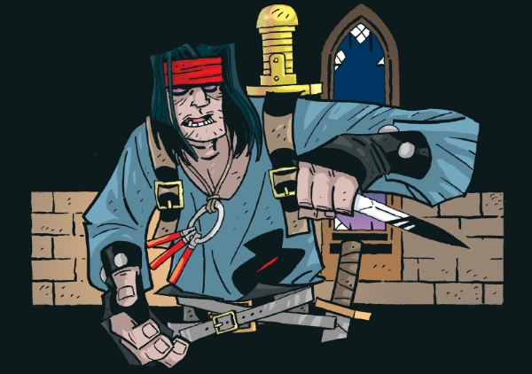

A shaggy dog story with undead demons, combat nuns, vengeful angels, dark godlings and untrustworthy vicars.
Art by Paul Grist & Phil Elliot
| Story Title | Parts | Pages | w indicates a wraparound coverCovers | Year(s) | Issues | Writer | Artist | Colourist | Letterer |
|---|---|---|---|---|---|---|---|---|---|
| Demon Nic | 8 | 120 | 0 | 2015-2016 | M361-M368 | Paul Grist | Paul Grist | Phil Elliot | Paul Grist |
| year | episodes | pages |
| 2005 | 0 | 0 |
| 2006 | 0 | 0 |
| 2007 | 0 | 0 |
| 2008 | 0 | 0 |
| 2009 | 0 | 0 |
| 2010 | 0 | 0 |
| 2011 | 0 | 0 |
| 2012 | 0 | 0 |
| 2013 | 0 | 0 |
| 2014 | 0 | 0 |
| 2015 | 7 | 105 |
| 2016 | 1 | 15 |
| 2017 | 0 | 0 |
| 2018 | 0 | 0 |
| 2019 | 0 | 0 |
| 2020 | 0 | 0 |
| 2021 | 0 | 0 |
| 2022 | 0 | 0 |
| 2023 | 0 | 0 |
| 2024 | 0 | 0 |
| 2025 | 0 | 0 |
| 2026 | 0 | 0 |